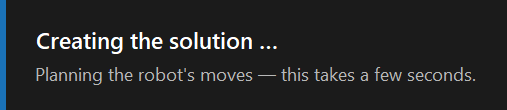

Creating the solution
A solution is the part’s whole pick-and-place cycle in a cell: the gripper, and every move of the robot from Home, through each station, and back to Home.
Creating it
Once the 3D part exists, the Workflow window shows Pick & Place Tech, with a blue glow. Click it.
-
The gripper: FRobot chooses one for the part: see How the gripper is chosen.
-
The part: it places the stack on the pickup pallet.
-
The cycle: it plans every move of the robot, starting and ending at Home.
While it plans, the window is dimmed and a card at the bottom left says Creating the solution …. The same card shows whenever the cycle is planned again. Planning usually takes a few seconds; a crowded cell can take up to a minute. Clicks and keys made meanwhile are ignored.

When it is done:
-
the whole cell is shown, with the stack on the pallet and the robot at Home;
-
the phase strip appears in the title bar;
-
the rail grows to the full set of tools.
Opening a cell config while a part is open creates the solution the same way.
|
Note
|
Home matters: every cycle starts and ends there. Set it with jog ▸ Set Home before you plan: see A new cell. |
The phases and their waypoints
The cycle is cut into phases, one per station. Each phase is a row of waypoints: the poses the robot passes through. Moves between waypoints are either joint moves (J), where each axis turns by the shortest way, or linear moves (L), where the TCP goes in a straight line.
| Phase | When | Waypoints in order |
|---|---|---|
P Pickup |
always |
Home, PickApproach (at least 50 mm above the stack), PickHeight, PickContact (the gripper takes the part), PickLift, PickRetract |
C Centering |
with a centering table |
CenDropApproach, CenDropPos (the part is released and slides into the corner), CenDropRetract, CenPickApproach, CenPartContact (the part is taken again), CenPartLift, CenRetract |
L Loading |
with a machine |
LoadApproach, LoadPartPos (the part is put on the bed), LoadRetract, FoldWait (the machine bends the part). Where the machine blocks a straight set-down, LoadFeed and LoadSlide (and LoadLiftOff, LoadSlideOut) are added. |
U Unloading |
with a machine and a Deposit station |
UnloadApproach, UnloadPick (the bent part is taken), UnloadLift, UnloadRetract |
R Regrip |
with a machine, a Deposit station and an Overturner, when Flip part is ticked in the Deposit panel |
RegripApproach, RegripPlace (the part is left on the Overturner), RegripRetract, RegripEnter, RegripBehind, RegripPick (taken from the other side), RegripLift, RegripSlideOut, RegripAway |
D Deposit |
with a Deposit station |
DropApproach, DropPartPos (the part is put down), DropRetract, Home |
Without a Deposit station, a cell with a machine ends after the bend, and the phase strip reports that the part stays on the machine bed.
Between the stations the robot swings with joint moves. The routing points of a swing are hidden, apart from those named TransitionSafe (one at the top of each bend of the swing).
How FRobot plans
-
Near a station the robot moves in straight lines: down to where it takes or leaves the part, and up again afterwards.
-
Retracts (the moves up and away) are at least 120 mm, longer where the part needs more room.
-
Swings between stations keep clear of the cell.
-
Clearance: FRobot keeps the arm, the gripper and the part 40 mm from elements with the role Other where there is room, and never closer than 10 mm. It keeps 10 mm from the Overturner. See Collisions and clearance.
When the plan has problems
FRobot always produces a cycle, even when part of it is not right. It shows what is wrong:
-
Out of reach. A dialog Path planning — out of reach lists each waypoint the robot can’t reach within its joint limits, for example Pickup · PickContact: out of reach — J5 130.0° above max 125°. It ends: Move the station closer / lower the stack, or reposition the robot, then regenerate. The cycle is kept as a preview.
-
Collisions the planner could not avoid: the phase cells turn red. See The phase strip.
What you can do:
| Problem | Try |
|---|---|
A station is out of reach |
Move the station or the robot (Frames and roles), lower the stack, then click recompute |
The grip makes the wrist turn too far |
Next heading in the Pickup panel: The pickup |
A swing collides |
recompute with an RRT planner: Re-planning |
One pose is slightly off |
Edit that waypoint: Waypoints |
Starting over
Ctrl+click on Pick & Place Tech discards the solution and keeps the 3D part. Click Pick & Place Tech again to plan from scratch.
|
Note
|
A plain click on Pick & Place Tech when a solution already exists does nothing, though its tooltip says "Re-simulate". To plan again, use recompute. |
|
Note
|
The planner chosen in recompute stays for every plan in the session, this one included: see Re-planning. |